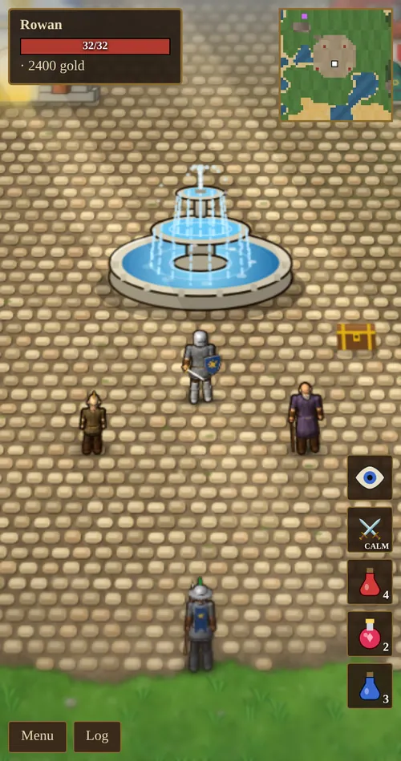
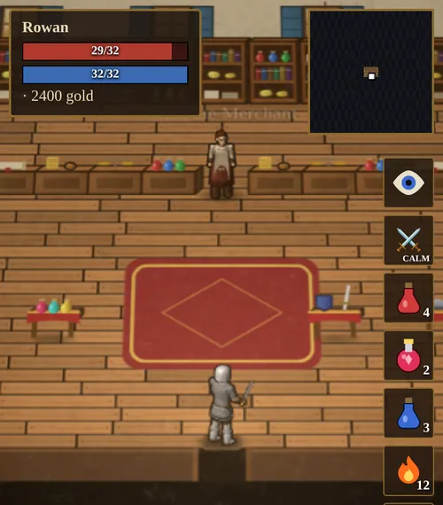
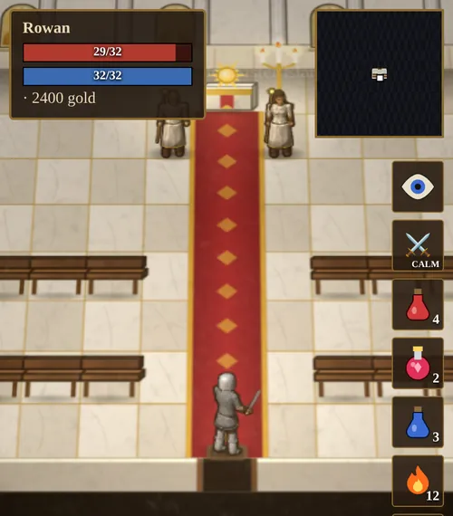
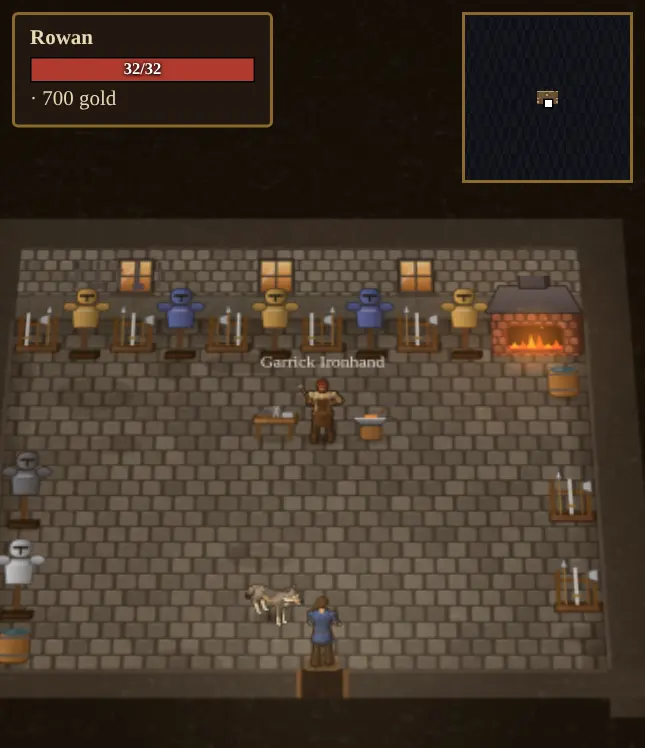
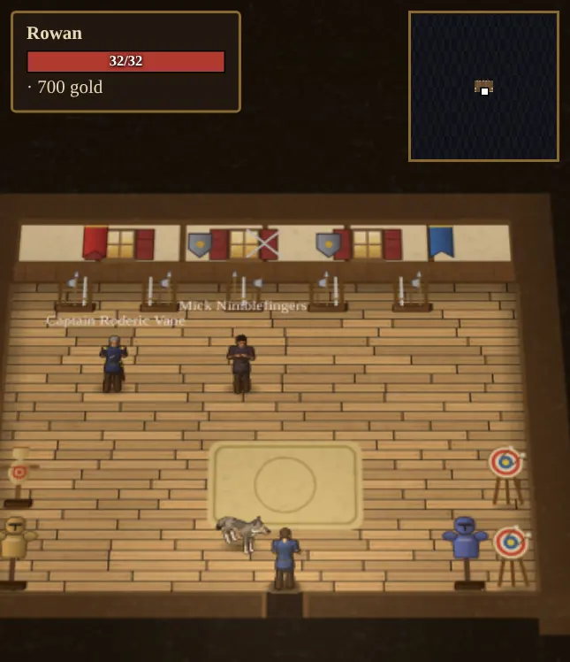
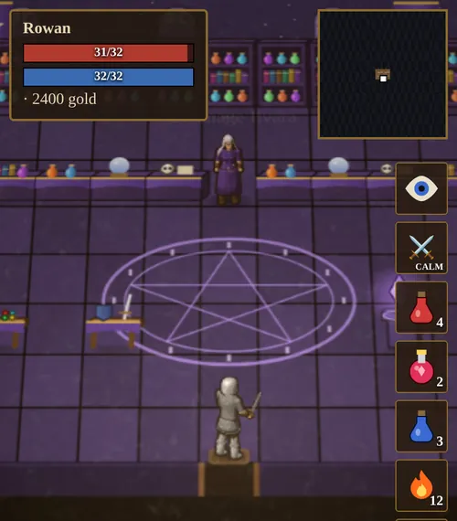
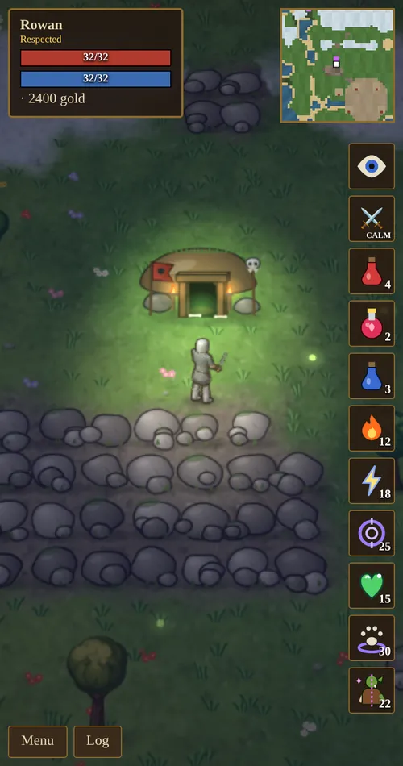
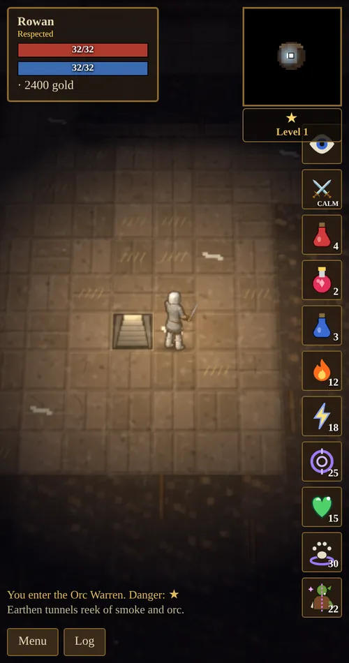
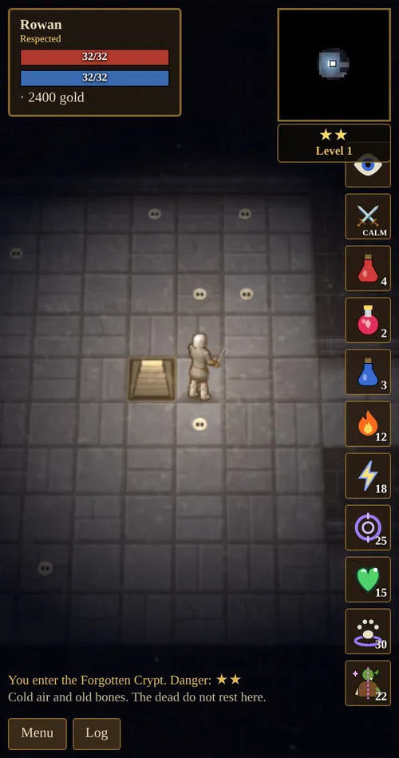

Chapter 8 of 10
The World
An island kingdom: a walled town in the middle, wild country all around it, and eleven dungeons and four mines to explore.
The town
Aethelguard’s town sits at the center of the island around a fountain. Four guards keep watch on the walls. Tap a door to go inside a building.

| Place | Who is there | What you can do |
|---|---|---|
| Temple of the Light | Brother Aldric, Sister Elara | Free healing; a 10-minute blessing for 50g; donations for reputation. |
| Mara’s shop | Mara the Merchant | Buy gear, potions and a pickaxe; sell gear and loot. |
| Garrick’s forge | Garrick Ironhand | Enhance, repair, smelt and forge; training in Blacksmithing, Mining and Arms Lore. |
| Training Hall | Captain Vane, Sylvie Wren, Mick Nimblefingers | Lessons in fighting, archery and stealth. |
| Mage tent | Archmage Ilvara | Reagents, magic training and the enchanter’s table. Appears after your first spell. |
| Fountain and storage chest | Pip and Old Wynn nearby | Safe storage for gear, gold and materials. |





The wilds
The world is a large island of grassland, forest, marsh, desert and snow, with the town in the middle. The further you go from town, the more dangerous it gets:
- Near the walls: giant rats and orcs.
- Further out: orcs and skeletons.
- The far wilds: skeletons, orcs and ghouls.
- The edges: ghouls, skeletons and wraiths.
Night brings stronger versions of familiar creatures. Birds and bats fly overhead, and a bow or Lightning can bring them down.
Dungeons
Dungeon entrances show as purple marks on the minimap. Inside, the darkness lifts as you explore. Monsters and a treasure chest wait at the far end, guarded by the boss.
- Killing a dungeon’s boss leaves its hoard for you. The lair restocks about 30 minutes later.
- Each time you defeat a dungeon’s boss, that dungeon comes back 35% tougher and richer.
- Monsters you kill inside come back after a minute or two.
- Skills rise 1.5× faster underground.

| Dungeon | Tier | Monsters | Boss |
|---|---|---|---|
| The Orc Warren | 1 | Orcs, ratmen | Gnarlfang the Warlord |
| The Ratmen Warrens | 1 | Ratmen, giant rats | Skrix the Rat King |
| The Sunken Grotto | 1 | Lizardmen | Zhar’ak the Scalelord |
| The Forgotten Crypt | 2 | Skeletons, skeleton archers, ghouls | Lich Morthal |
| The Elderwood Hollow | 2 | Treants, orcs | Old Thornroot the Elder |
| The Ogre Hold | 2 | Ogres, orcs | Grumthar Skullcrusher |
| The Aerie of Storms | 2 | Harpies, gargoyles | Shrieka, Queen of the Gale |
| The Elemental Sanctum | 2 | Fire, air, water and earth elementals | Veyra, the Elemental Summoner |
| Nightmare Hollow | 3 | Nightmares, wraiths | Cinderhoof, King of Nightmares |
| The Dragon’s Lair | 3 | Ghouls, wraiths | Vyrmgor the Drake |
| The Infernal Pit | 3 | Demons, devils | Azmodrax the Pit Lord |
Higher tiers lie further from town. Tier 1 is right for a new hero with a longsword and potions. Tier 3 needs your best gear.


Mines
Four mines (the Ironvein Mine, the Deepdelve, the Hollow Shaft and the Sunken Drift) are dug into the rock. They are full of ore veins, with orcs, rats and skeletons, but no boss or chest. A mine refills about eight minutes after you leave.
Bestiary
| Creature | Health | Found |
|---|---|---|
| Giant rat | 8 | Near town, rat warrens |
| Orc archer | 24 | Orc lands |
| Orc | 26 | Wilds, Orc Warren, mines |
| Bloodmoon rat | 26 | At night |
| Ratman | 28 | Ratmen Warrens, Orc Warren |
| Skeleton archer | 34 | Crypt |
| Lizardman | 40 | Sunken Grotto |
| Skeleton | 42 | Wilds, Crypt, mines |
| Harpy archer | 44 | Aerie |
| Harpy | 54 | Aerie of Storms |
| Ghoul | 60 | Far wilds, Crypt, Dragon’s Lair |
| Nightblood orc | 70 | At night |
| Wraith | 90 | Edges of the world, Nightmare Hollow, Dragon’s Lair |
| Air elemental | 95 | Elemental Sanctum |
| Gargoyle | 98 | Aerie of Storms |
| Demon | 100 | Infernal Pit |
| Revenant | 105 | At night |
| Fire elemental | 110 | Elemental Sanctum |
| Ogre | 118 | Ogre Hold |
| Nightmare | 122 | Nightmare Hollow |
| Water elemental | 125 | Elemental Sanctum (heals) |
| Devil | 142 | Infernal Pit |
| Treant | 155 | Elderwood Hollow |
| Earth elemental | 210 | Elemental Sanctum |
Bosses
| Boss | Health | Lair |
|---|---|---|
| Gnarlfang the Warlord | 170 | Orc Warren |
| Skrix the Rat King | 200 | Ratmen Warrens |
| Zhar’ak the Scalelord | 240 | Sunken Grotto |
| Lich Morthal | 330 | Forgotten Crypt |
| Shrieka, Queen of the Gale | 360 | Aerie of Storms |
| Veyra, the Elemental Summoner | 430 | Elemental Sanctum |
| Grumthar Skullcrusher | 430 | Ogre Hold |
| Old Thornroot the Elder | 490 | Elderwood Hollow |
| Vyrmgor the Drake | 620 | Dragon’s Lair |
| Cinderhoof, King of Nightmares | 720 | Nightmare Hollow |
| Azmodrax the Pit Lord | 780 | Infernal Pit |
| Queen Vermissa, the Plague Mother | 1,100 | World boss |
| Malgrath the Hollow King | 1,300 | World boss |
| Gorgrim Skullsplitter, Orc Overlord | 1,400 | World boss |
| Ignarax the Ashen Wyrm | 1,500 | World boss |
Health shown is for a dungeon’s first visit; it rises 35% each time you clear that dungeon.